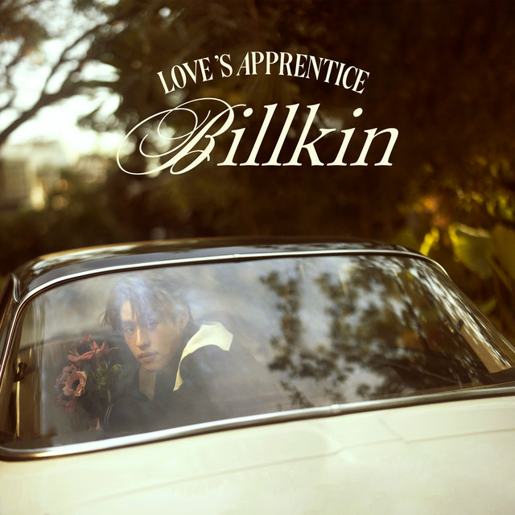
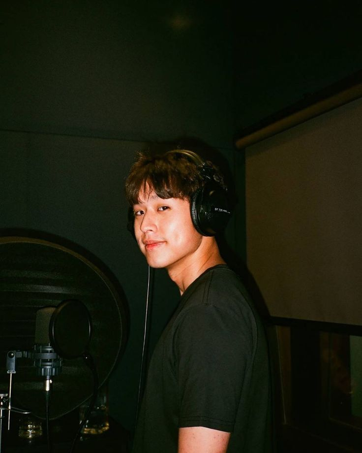
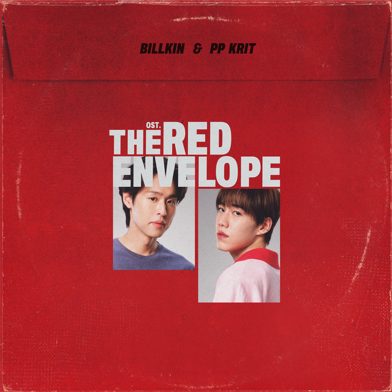
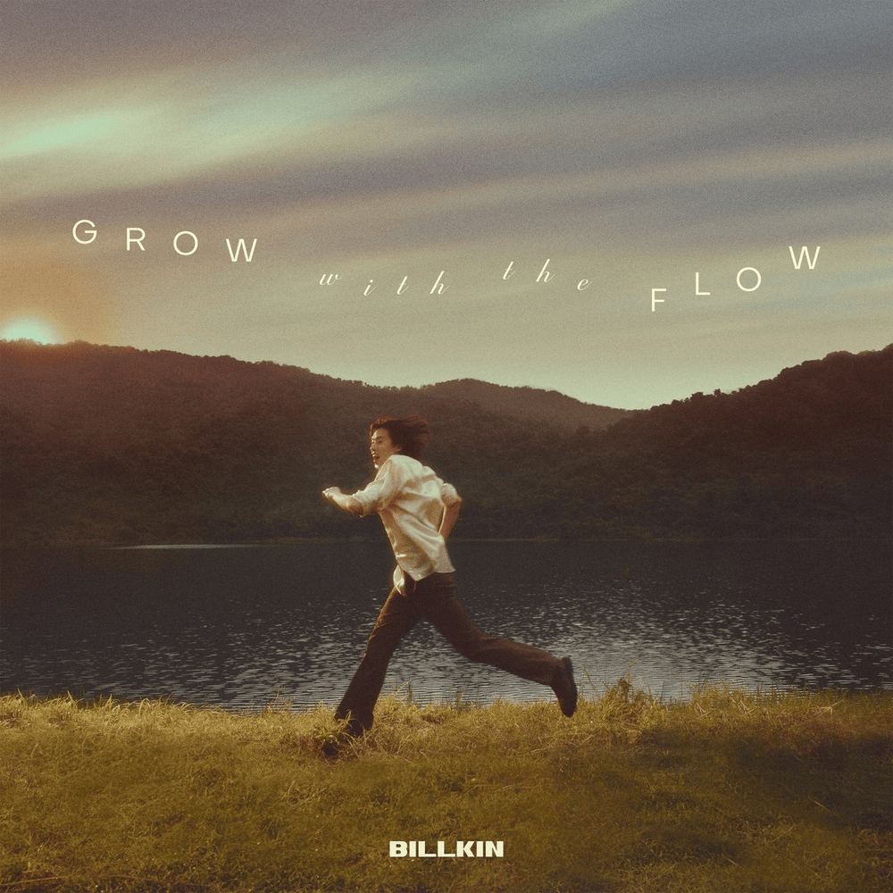
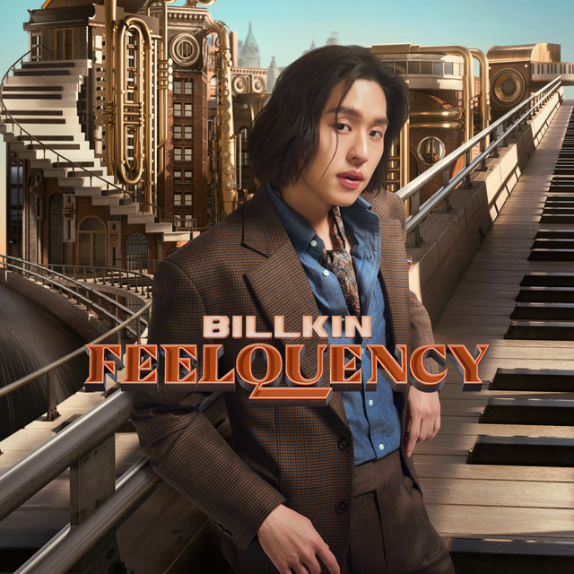
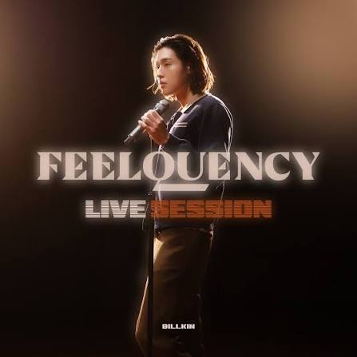
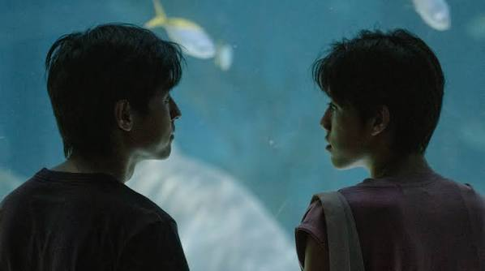
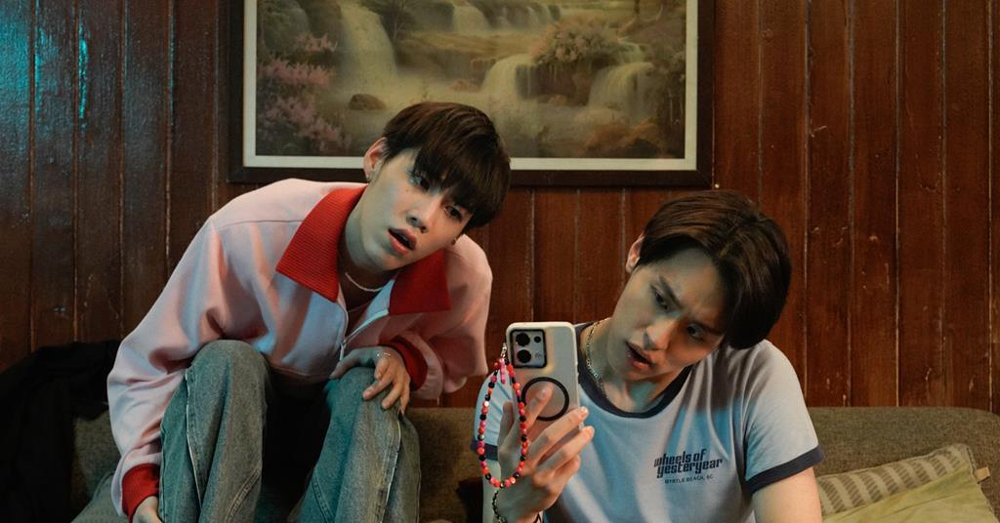

2023 EP
LOVE'S APPRENTICE
Tracklist
- ชอบตัวเองตอนอยู่กับเธอ (I Like Us)
- การเดินทางที่สวยงาม (A Beautiful Ride)
- Mr. Everything
- กลับมาคบกันเถอะ (Please Please)
- ยิ้มทั้งน้ำตา
Actor · Singer · Artist
A fan-made collection of Billkin Putthipong's music, albums, songs and acting works.
Explore his work ↓
01
About
Billkin is a Thai actor and recording artist known for his acting, pop music and soundtrack releases.
This website presents his albums, songs and selected acting works.
02
Discography

2023 EP

2025 OST EP

2025 Album

2026 Album

2026 Live Session
03
Complete discography
04
Acting
2020 Series
Billkin played Teh in the coming-of-age series set in Phuket.

2021 Series
Billkin returned as Teh in the continuation of the story.

2024 Film
Billkin starred as M in the family drama film.

2025 Film
Billkin played Menn in the supernatural comedy-drama.